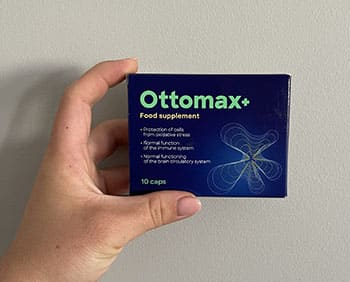
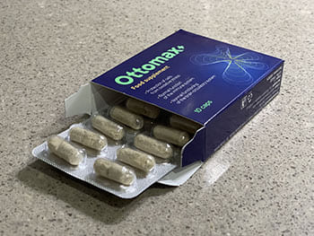

Gluosnės Rimšelienės (68 metai) istorija gali būti pažįstama daugeliui kitų mūsų šalyje. Užtenka pasakyti, kad kiekvienais metais vis daugiau žmonių, net ir jaunesnio amžiaus, turi problemų su triukšmu ausyse. Priežastys gali būti skirtingos - skydliaukės hiperaktyvumas, tachikardija, ilgas antibiotikų vartojimo laikotarpis, aterosklerozė. Tačiau dažnai priežastis lieka nežinoma ir yra nustatoma neteisinga diagnozė. Taip buvo ir su Gluosne, kuri sutiko su mumis pasidalinti savo kovos su šia negalia patirtimi.
Aš girdėjau triukšmą ausyse
Aš gerai atsimenu savo pirmą apsilankymą pas specialistą. Tai buvo prieš daugiau nei 10 metų. Aš buvau labai įsitempusi ir nerimavau dėl savo klausos ir psichikos. Aš jau seniai girdžiu keistus šnypščiančius ir spengiančius garsus. Nuolat, ir dieną, ir naktį. Jie trukdė man normaliai gyventi. Aš galvojau, kad aš išprotėsiu nuo šių triukšmų. Aš negalėjau su visu tuo susitvarkyti. Ir kas dar blogiau, tai įtakojo mano santykius su mano artimaisiais - aš dariausi vis labiau uždari.
"Dėl pastovaus triukšmo ausyse man pastoviai skaudėjo galva. Aš daugiau nebendravau su draugais ir giminaičiais."
Man paskyrė tyrimus, bet rezultatai buvo neaiškūs. Verdiktas: mes nežinome priežasties, bet tai yra nepagydoma, reikia išmokti su tuo gyventi. Vėliau aš apsilankiau pas daugelį specialistų, ir visi jie buvo vienodai bejėgiai. Galų gale aš pasidaviau.
Pasidarė tik blogiau
Mano problemos su triukšmu ausyse paaštrėjo. Ypač kai buvo tylu ir kai aš norėjau užmigti. Tiksliau, kai aš stengiausi užmigti - dažnai gavosi, kad šie triukšmai trukdė man tai padaryti. Aš pastoviai pavargdavau ir užsidarydavau savyje dėl viso to. Negalėjau susikaupti, ir mano atmintis blogėjo. Mano artimieji bandė man padėti, tačiau sunkiai suprato, kaip tai padaryti. Tik aš girdėjau šiuos triukšmus. Kartais man rodėsi, kad žmonės laiko mane išprotėjusia. Kaimynų vaikai kikeno, jog "štai eina ta, kuri balsus girdi".
"Po nesėkmingų apsilankymų pas specialistus aš susitaikiau ir galvojau, kad dabar šis triukšmas ausyse - visam laikui..."
Šioje būsenoje aš gyvenau daugelį metų ir jau susitaikiau su tuo, kad taip bus visada. Nedideliu, tačiau vis tam tikru mastu netgi išmokau kontroliuoti savo reakciją į šį triukšmą. Jis tapo mano neatsiejamu gyvenimo palydovu. Iki to atmintino antradienio.
Šviesa tunelio gale
Pasirodo, kad mano dukra užregistravo mane į susitikimą su žmonėmis, kurie turėjo tokią pat problemą, kaip ir aš. Ėjau aš ten šiek tiek neryžtingai. Aš jau apsilankiau pas tiek specialistų, perskaičiau tiek straipsnių, kad iš tikrųjų... savęs neapgaudinėjau. Tačiau susitikime aš sužinojau, kad mūsų šalyje atsirado naujas kovos su triukšmu ausyse metodas - , ir man pavyko praeiti išankstinę atranką į savanorių grupę, kad šį metodą išbandyti. Aš buvau skeptiškai nusiteikusi, bet mano dukra mane įtikino. Ji pasakė: blogiau nebus. Taigi aš pabandžiau. Tas faktas, kad tai buvo visiškai natūralus metodas, be chirurginių intervencijų, mane nuramino.
Efektas viršijo visus mano lūkesčius
Tiesiog po savaitės po kurso vartojimo pradžios aš pasijaučiau daug geriau psichologiškai. Aštuntą dieną aš pirmą kartą miegojau visą naktį be šių siaubingų jaudinančių triukšmų. Kai aš atsikeliau ryte, aš buvau nustebinta, jog taip gerai miegojau, ir kad ištisą naktį niekas man netrukdė. Bėgo laikas, ir triukšmai tapo tylesni. Aš po truputį įgavau naujų jėgų. Dienai bėgant aš galėjau daug geriau susikaupti atlikdama savo kasdieninius darbus ir daugiau nepamiršdavau, kur padėjau raktus nuo namų. Aš pradėjau daugiau bendrauti su artimaisiais. Aš aiškiau juos girdėjau ir daugiau neklausiau savęs, ar jie pasakė ką nors, ko aš neišgirdau. Aš ryžausi susitikti su daugybe žmonių ir daugiau nebijojau, kad žmonės laikys mane išprotėjusia.
"Po kurso triukšmas ausyse dingo! Aš iš pradžių net nepatikėjau, jog atsikračiau problemos, kuri mane kankino daugelį metų…"
Po 1,5 mėnesio po kurso pradžios man patikrino klausą. Testui aš gavau štai tokias speciales uždedamas ausines. Specialistas pasakė, kad receptorinės klausos ląstelės ausies viduje atsistatė ir sugrįžo į pradinę deramą būseną. Erzinantis triukšmas dingo.
Naujoviškas klausos atstatymo metodas
- Skambesys ausyse labai apsunkina kasdieninį gyvenimą. Jūs negalite normaliai funkcionuoti ir atlikti savo kasdieninius darbus. Dėl problemos nuvertinimo arba neteisingos diagnozės triukšmas ausyse pasireiškia vis dažniau, kas taip pat yra susiję su bloga nuotaika, besikaupiančiu fiziniu ir protiniu išsekimu, o kai kuriais atvejais net su depresija ir suicidinėmis mintimis. Dar neseniai sunku buvo rasti natūralų metodą, kuris galėtų pilnai išspęsti šią problemą. Dabar tai pasikeitė dėka. Šis produktas padeda išspręsti ištisą aibę problemų, susijusių su klausa:
- Skatina triukšmo ausyse malšinimą
- Padeda pagerinti klausos kokybę
- Padeda apsaugoti klausos aparatą nuo didelių garsų iš aplinkos
- Skatina miego kokybės gerinimą ir nervų sistemos stiprinimą
"Aš manau, jog tai tikras neinvazinių terapijos metodų protrūkis kovoje su šia problema."
kapsulių sudėtyje yra natūralūs augalų ekstraktai, mikroelementai ir vitaminai. Jie padeda sumažinti arba išvis pašalinti triukšmą ausyse ir padeda išgirsti tikrus normalaus intensyvumo garsus. Produktas užtikrina, kad klausos organas bus nuolat apsaugotas 24 valandas per parą. Metodas yra 100% natūralus ir jo veiksmingumą jau patvirtino virš 6000 moterų ir vyrų visoje Europoje - jie pilnai atsikratė triukšmo ausyse problemų.
Kur aš galiu gauti ?
Mes rekomenduojame jums užsisakyti originalų preparatą naudojant užsakymo formą, pateiktą žemiau. Bet paskubėkite, likusių pakuočių kiekis bus greitai išparduotas!
Komentarai
ATRADIMAS: 10 metų kančių dėl triukšmo ausyse. Ji girdėjo triukšmus, kurių nebuvo. Jūs nepatikėsite, kas jai padėjo
Pridėti komentarą
Įdomu, galbūt ir man padės. Kas nors jį vartojo?
Taip, aš baigiau kursą. Triukšmas ausyse iš tikrųjų praėjo. Imkite, nepasigailėsite.
Man nuolat skaudėjo galva, jau 5 metus. Iš pradžių net vaikai išsigando, kad pas mane smegenų auglys. O pasirodo, tai dėl blogos klausos ir triukšmo ausyse! Po 3 savaičių vartojimo pirmą kartą per daugelį metų daugiau neskauda galva. Tai tokia laimė!
Buvau dešimtyse konsultacijų pas žinomus specialistus ir niekas negalėjo man padėti. Sakė, kad man reikia susitaikyti ir išmokti su tuo gyventi. Kad jie žinotų, koks tai gyvenimas! Sužinojau apie iš žurnalo, nusipirkau. Po savaitės pranyko triukšmas ausyse, dar po savaitės aš pradėjau geriau girdėti, o po mėnesio jau nieko neklausiau antrą kartą ir sumažinau garsą televizoriuje! Jūs neįsivaizduojate, kokia aš laiminga!

Aš ieškojau preparato savo tėvui, jis kategoriškai atsisakė nešioti klausos aparatą. Sakė, kad tai yra labai nepatogu, ir galų gale tiesiog nespendžia problemos. Nusipirkau pagal specialisto rekomendaciją. Tėvas patenkintas. Dabar sako, kad mes taip nešauktume, jis puikiai mus girdi)
Mano močiutė irgi vartojo ir jis jai labai padėjo, dabar aš galiu kalbėti su ja net pašnibždomis. Kaip gerai, kai artimieji yra sveiki!
Kai pas mane atsirado triukšmas ausyse, aš pagalvojau, jog turiu problemų su psichika. Labai išsigandau. Po to aš po truputį pripratau prie jų, tačiau žinoma jaučiu diskomfortą. Jeigu šios kapsulės tikrai padeda, reikia pabandyti. Užsakysiu.
Aš kreipiausi į nuosavą kliniką, baigiau ten kursą, bet be rezultatų. Išvis negaliu miegoti dėl triukšmo ausyse. Šios kapsulės yra mano paskutinė viltis. Jau nusipirkau , tikiuosi, kad suveiks.
Mano mama turėjo problemų su triukšmu ausyse po antibiotikų, ji buvo visą laiką susierzinusi, bet su ji jaučiasi daug geriau.
Man patiko sudėtis, nieko nereikalingo, viskas natūralu. Efektas pasireiškia ne pat pirmą dieną, o palaipsniui. Kaip ir viskas, kas yra natūralu. Man jį parekomendavo draugė, ji įspėjo, kad jau po 2 savaičių vartojimo aš pajusiu veikimą. Taip ir atsitiko. Aš pradėjau geriau ir aiškiau girdėti!
Kur aš galiu jį užsakyti?
Nuoroda į svetainė yra po straipsniu, patikrinkite dar kartą.
Aš vartoju jau 3 savaites ir esu absoliučiai priblokštas. Aš girdžiu, kaip niekada anksčiau!

Tarp kitko, kaina labai priimtina. Aš negalėčiau nusipirkti brangų produktą.
Man asmeniškai kaina nerūpėjo, bet man svarbu, kad produktas tikrai veikia. Darbo kolega pirko, gyrė. Gerai, kad internete radau šį straipsnį!